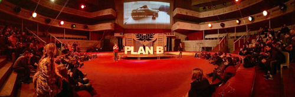
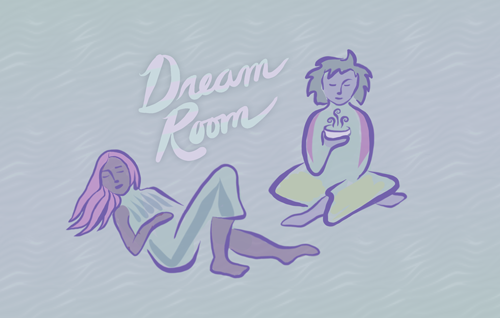
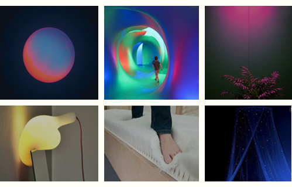
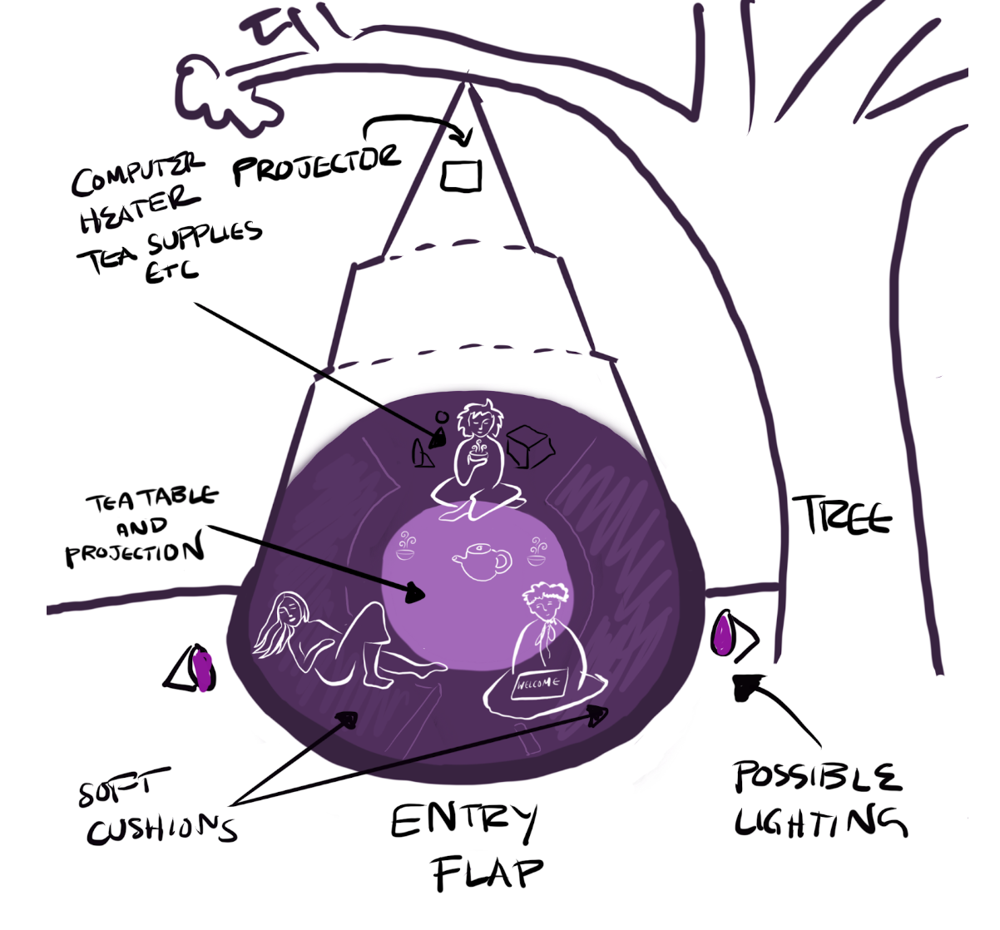

Dream Room:
Designing for peaceful feelings
"The Dream Room should be at every festival and event"
- Festival Feedback
Three years ago I went to Plan B, an activist festival in Kharkiv, Ukraine. The festival was held in an old circus: majestic, gilded, and peeling apart at the edges. Everything felt urgent and raw and exciting. There were so many faces and smells and lights and so much noise. By the end, I was exhausted.
The closing party was in a subterranean club. You could hear the urgent techno from the door.
Inside, relentless strobe-lit bodies were pounding the ground. The air was wet with energy. Sweaty dancers were thrashing, pulsing, and flailing.
But in the corner of the club, there was a single table. Dreamy candle-lit faces encircled the table. And a host at the center, gently pouring each person a cup of hot tea.

It was a different kind of space inside the space. It was a space to find peace without retreat.
That's when I knew I would design spaces for peace inside the party. And for me, this was the beginning of designing the dream room.
What is the Dream Room?
The Dream Room is a warm, soft experience that runs parallel to and inside the magical chaos of an event.
The Dream Room is a ritual space for people to be present, to reflect and connect. Soft cushions, soft hypnotic sounds, and soft light surround an interactive, slowed-down, softened live-feed video projection of the party.
At the centre of the Dream Room is a round table with an ongoing tea service. The space is continuously stewarded by hosts who actively foster a feeling of welcome, connection, and care. 
Why have a Dream Room?
The best events and gatherings are exciting, connective, and transformative. But the more overwhelming the excitement, the more intensely people burn out.
First we lose the introverts, the sensitive people, and the people who simply find the informational volume too loud. Eventually, even the most dedicated extroverts will leave, needing rest and recovery.
But post-event burnout is completely unnecessary. With thoughtful design, we can build events that work for people, events that energise and fulfill us.
The Dream Room is a way for people to stay present, to be a part of things, but to shift into a gentler state when they need space. It allows people to stay open without burning out, to take care of ourselves and each other.
The Team
I co-designed The Dream Room with Linsey Raymaekers(Personal Games) and Brie Code(TRU LUV, Carewave).
Popticom made the tent and Meredith Thomas made a beautiful interactive projection for the first Dream Room, at A MAZE. Berlin 2018.
The hosts who brought the installation to life are Alina Reder, Angela Manna, Beck Michalak, Darshana Jayemanne, Jonas Bohatsch, Lisa Schaeffer, Mariam Zakarian, Mattias Ditto Dittrich, Robert Wolf, Siobhan Gibson, Thryn Henderson, and Till Isenhuth
Inspirations
Amoung other spaces, the Dream Room was inspired by the chill-out sanctuary, a lost staple of 90s parties. Also by the famous "dream house" in New York City. And the tea ceremony at the beginning of this post. And maybe above all, “rest areas” and similar spaces developed by accessibility teams at music festivals.
Mood
To evoke feelings of safety, of soft joy, and of care.

Credits left to right: Unknown, Mirazozo - Architects of Air, Unknown, Frambach - the Soft Light, Céline Merhand and Anaïs Morel - Sensorium, Unknown, SCP-354, Crystal Ball Cavern — DANIEL ARSHAM, Captain Tenneal - Okra, Unknown, Ernesto Neto - Celula Nave, Missoni
Layout
A layout sketch I did for the Dream Room.
Challenges
Some of the core challenges:
- Being a priority: Communicating the importance of a recuperative space. It's not standard to have this kind of space at events (yet).
- Human power: Our hosts shape and maintain the feeling of the space themselves, which requires aptitude, interest, and training.
- Cold/Noise: The first dream room was outdoors, in April. We used space heaters to keep the Dream Room warm, and soft musical tones to help soften invasive noise.
- Decentralized Collab: Three of us were co-designing together, like a three-headed unicorn. We needed and developed excellent communication skills!
- Budget: There wasn't a huge budget, so we worked creatively on seating and our tea service.
- Wind: The first dream room was in a hanging tent made by Popticom. It was beautiful, but the wind almost blew us away (see the tent blowing away below).
Looking forward
Future dream rooms could further explore the gentle and tiny interactions between the people in the dream room. The structurelessness of the interactions led to some beautiful and sometimes silent connections.
Below is a 360 degree video clip Meredith made of the Dream Room at A MAZE. Berlin, drag to look around the room!
Feedback
Some feedback that made it all worthwhile:
"The Dream Room was the best part of A MAZE."
"The Dream Room was everything I didn't know I needed but now I'll never leave"
"I was sad and I went to the Dream Room and it was ok to be sad and it got better"
"The Dream Room should be at every festival and event."